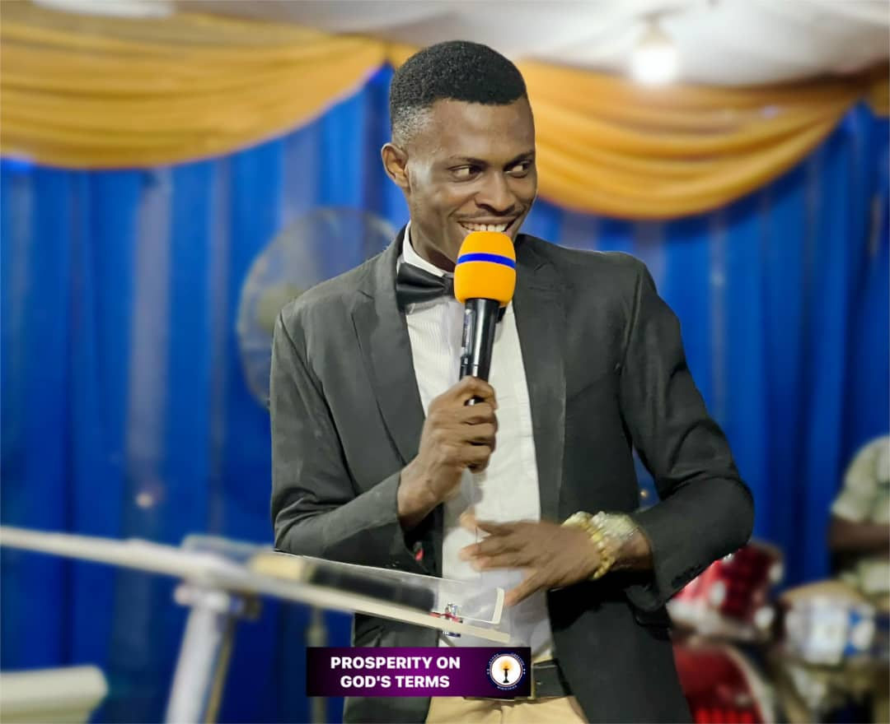

Our Branches
Headquarters
LagosLakowe
Amusa Shamsudeen St., Off Cele-Egun Church, Lakowe School Gate, Lagos.
Sunday Services: 8:00 AM - 11:00 AM
Owerri Branch
FUTO
Santiago Viewing Centre Directly Opp. Gambia Lodge, Sekani Street, Eziobodo FUTO, Owerri
Sunday Service: 8:00 AM - 11:00 AM

Lagos Branch
Lekki
34 Lawal Street Igbara Maiyegun Lekki Lagos
Sunday Service: 8:00 AM - 11:00 AM